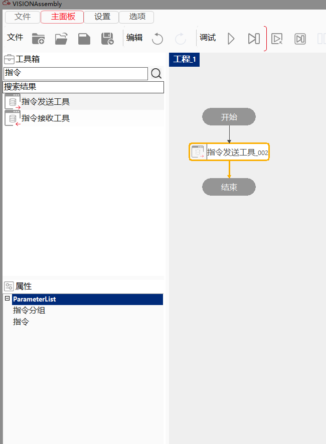
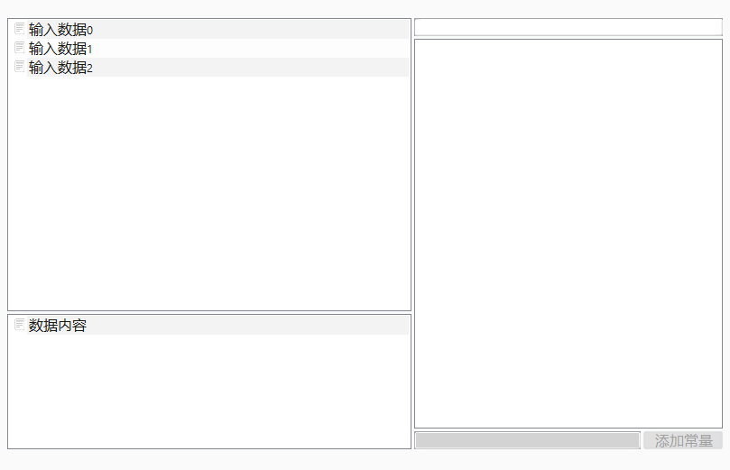

Công cụ nhận lệnh，cần sử dụng kết hợp với bộ lệnh truyền thông，chủ yếu là gửi lệnh dữ liệu có định dạng cụ thể đến cổng thiết bị đích，hoàn thành việc trao đổi thông tin với thiết bị bên ngoài。
Phù hợp với hai phương thức truyền thông：Ethernet Ehternet Tcp/IP không giao thức và PLC MX-Competent。
Sử dụng mạng、cổng nối tiếp、thanh ghi, v.v. để thiết lập kết nối với đầu thiết bị khác，gửi dữ liệu nội bộ đến đầu thiết bị khác theo quy tắc lệnh truyền thông。


| Mô tả hiện tượng | Phương pháp xử lý |
|---|---|
| Công cụ chạy thất bại | 1、Kiểm tra nhóm lệnh、lệnh của công cụ đã được thiết lập hay chưa |
| 2、Kiểm tra nhóm lệnh của công cụ có bị xóa hoặc đổi tên hay không（xem trong quản lý lệnh） | |
| 3、Kiểm tra nhóm lệnh được thiết lập cho công cụ đã thiết lập cổng truyền thông hay chưa | |
| 4、Kiểm tra nhóm lệnh được thiết lập cho công cụ đã thiết lập tham số timeout hay chưa，công cụ có bị timeout truyền thông hay không | |
| 5、Kiểm tra truyền thông có bị gián đoạn hay không，có thể xem cổng truyền thông đang được nhóm hiện tại sử dụng trong quản lý lệnh |
| Tên tham số | Mô tả tham số |
|---|---|
| Nhóm lệnh | Chọn một nhóm lệnh trong quản lý lệnh。 |
| Lệnh | Chọn một lệnh gửi trong nhóm lệnh hiện tại。 |
| Tên tham số | Mô tả tham số |
|---|---|
| Nội dung dữ liệu | Nội dung dữ liệu mà công cụ gửi đến thiết bị khác。 |
| Kết quả thực thi | Kết quả thực thi công cụ。 |
| Thời gian thực thi | Thời gian thực thi công cụ。 |
Tham khảo “\Samples\指令接收发送工具.gvp”。